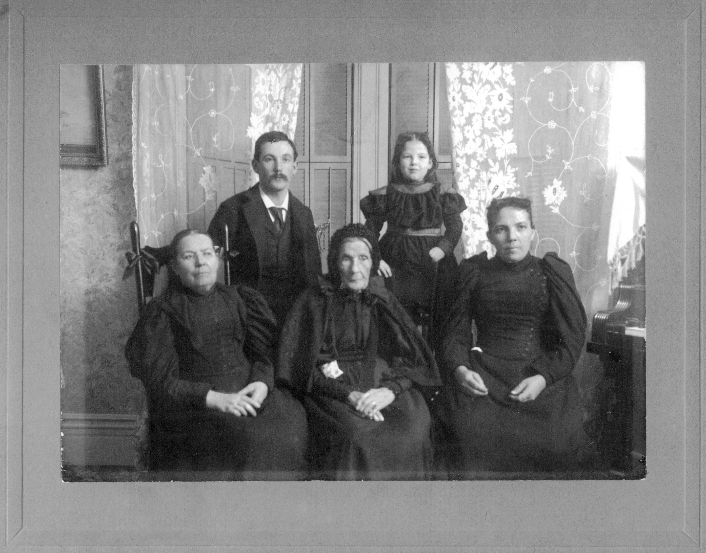

The Family Chronicle
No. 151 January 27, 2008
____________________________________________________________________

Mary
Ann (Harley) Henry 1799-1898 (Centre) with family
Harley Notes
My Great Grandmother on my father’s side of the family was a Harley, daughter of William and Ann (Bidders) Harley. William was born in Worcester, England about 1750 and died in Courtmacsherry, County Cork, Ireland about 1830. He was a school teacher. His wife, Ann Bidders, was born about 1755 in Swansea, Wales; raised her family in Ireland; after her husband died in 1930, Ann moved to Newcastle, NB where she died 1845. We have not been able to
find her find her place of burial. William and Ann had five children:
William (1796-1838) came to New Brunswick about 1820 and worked as a surveyor. In 1823, he married Ann MacLean and they had five children Prudence, William, Archibald, Eliza Ann and Susan Jane. The family moved to Ontario about 1832 or 1833. In 1834 Ann died shortly after the birth of their sixth child, James. William remarried Susannah Stewart and they had one daughter, Prudence. A letter from William to Ann, written on November 28, 1832 will appear in a later Newsletter.
Mary Ann (1799-1898) came to Newcastle in 1822, married John Henry in 1823; they had nine children including Elizabeth, George, Nicoliena and William. The Henry’s lived for a number of years in the Stonehaven /Clifton area. John Henry died in 1870 and Mary Ann moved to Portland to be with her children. (Regular readers may recall the account of Mary Ann’s 99th birthday party reported in Chronicle 134) Nicoliena Henry married William John Stevens and they lived for a while in Canobie, NB. The Stevens moved from Canobie to Portland in 1881 and, I believe, sold their farm in Canobie to my Grandfather, Walter Glendenning. A descendant of Mary Ann reports having held John Henry’s Bible which is owned by another descendant in Upper New York State.
John, (1800-1875) came to New Brunswick in 1823 and worked as a shipbuilder with William Abrams on Beaubear’s Island (once known as Harley’s Island); he moved to the shipyard of Joseph Russell where he became foreman. Later he and George Burchill bought Beaubear’s Island and the ship building business. Harley and Burchill dissolved partnership and John Harley took over the business. Following an economic downturn, John lost the business to the bank but remained active in the business community. Russell Later he formed a partnership with George Burchill in shipbuilding. John married Ann Coughlin and they had five children, Susan, Frances, William, Charles and John. When John’s father died (1830) John’s mother, Ann, came to live with him in Newcastle.
Elizabeth (1797-1876) came to New Brunswick and married William Knowles who, I believe, operated a stone quarry in Stonehaven, NB. According to my records they had three children, John, Richard and Hazel.
Margaret (1803-1895) my Great Grandmother married John Glendinning and they had five children: Mary Ann, John, Margaret, Elizabeth and Walter. They first lived in Salmon Beach, NB where Margaret taught school in her home. Later they moved to Canobie where they farmed.
Harley descendants form my Harley Email network and include: Robert Stevens (USA), a descendant of Mary Ann; Heather Hess (Can), a descended of William; Bonnie Hamilton (Can) and Kelsie Erskine (Ireland), descendants of John; Irma Downing (Can) descended from Elizabeth; and myself, Don, descended from Margaret. In addition Kim Neilson (Can) has Harley roots but we have not been able to establish kinship yet.
(To be continued)
The Family Chronicle (Copyright) is an occasional newsletter published by Don Glendenning and posted on the family website. It is intended to share information about my family, community and the times in which I grew up. While every effort is made to be accurate, errors are likely to occur. Comments, enquiries and information may be sent to 62 Queen Elizabeth Drive, Charlottetown, PEI, C1A 3A9. Tel: 902 892 5859. Email: don@glendenning.net Web: www.glendenning.net/don